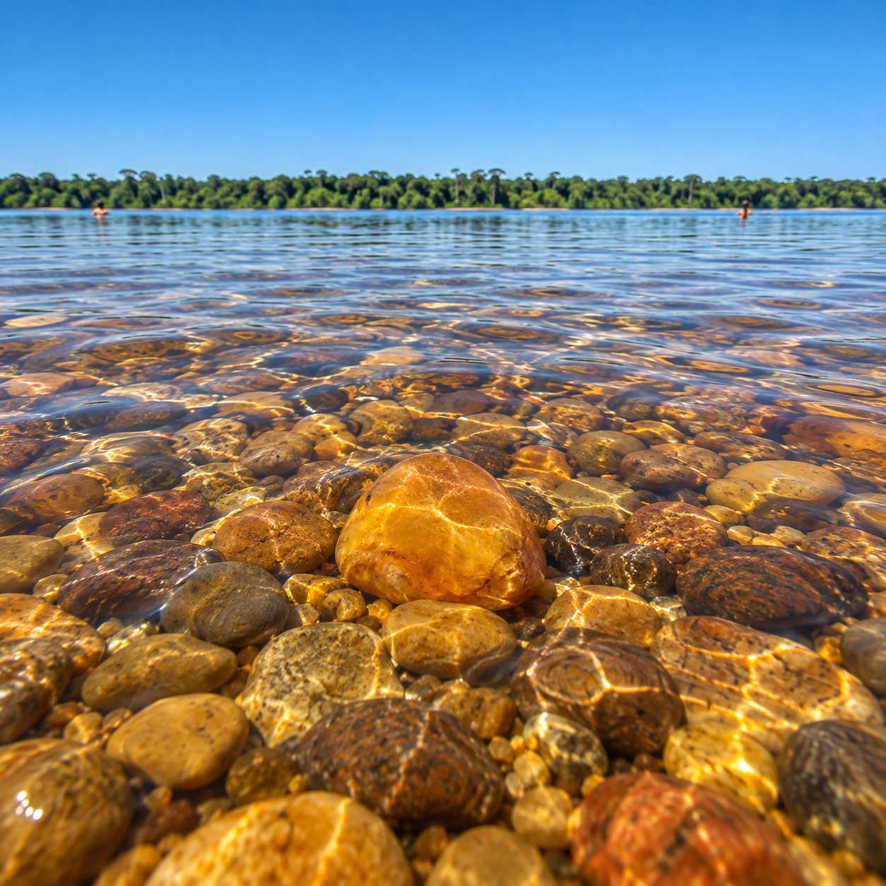
Rio Xingu · banho · pausa
Águas do Xingu
Praias, bancos de areia e tempo sem pressa
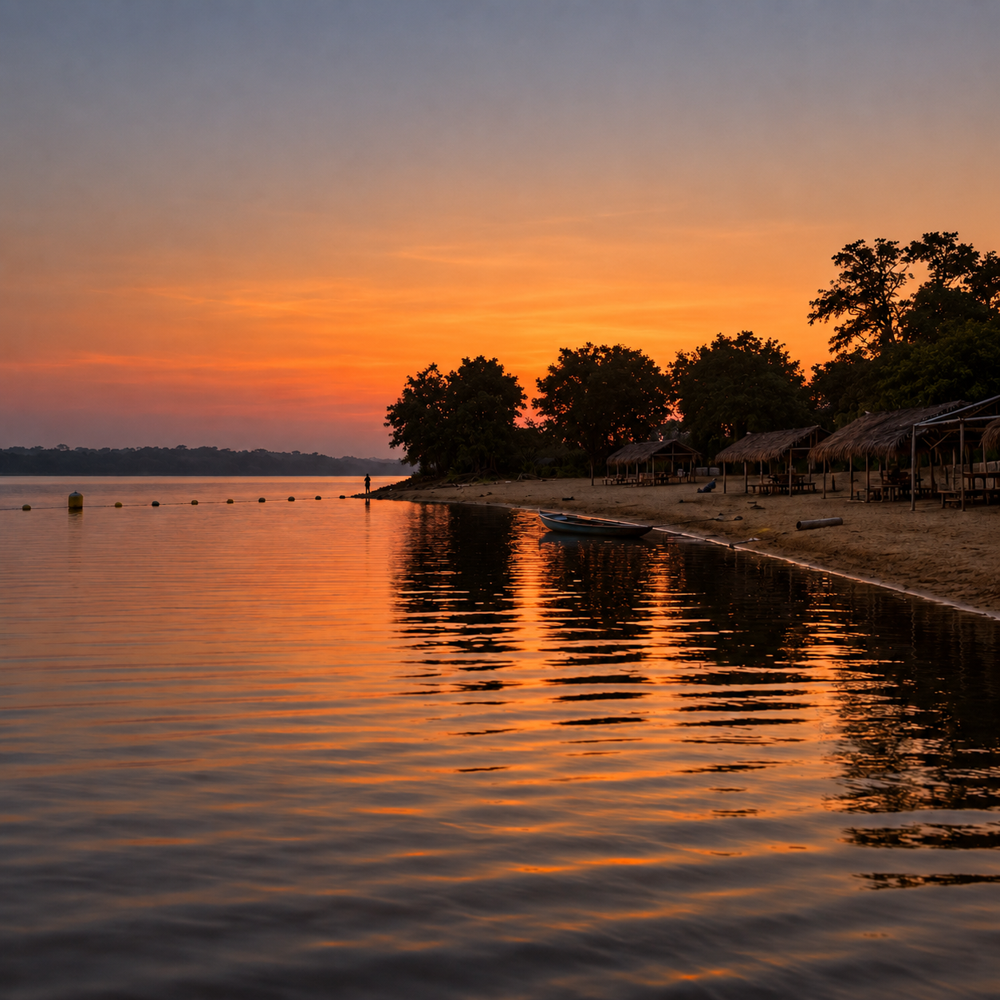
Altamira · Pará · Amazônia
Rotas feitas de água, floresta, sabores e encontros. Descubra Altamira pelo ritmo do Xingu.
Explorar Altamira ↘Role para descobrir
A eConexão aproxima você das pessoas, lugares e saberes que fazem de Altamira um território único.
Escolha uma direção. O resto, a Amazônia revela.
02 — rotas de Altamira
Escolha o ritmo da viagem. Cada rota aproxima paisagens, experiências e negócios locais.

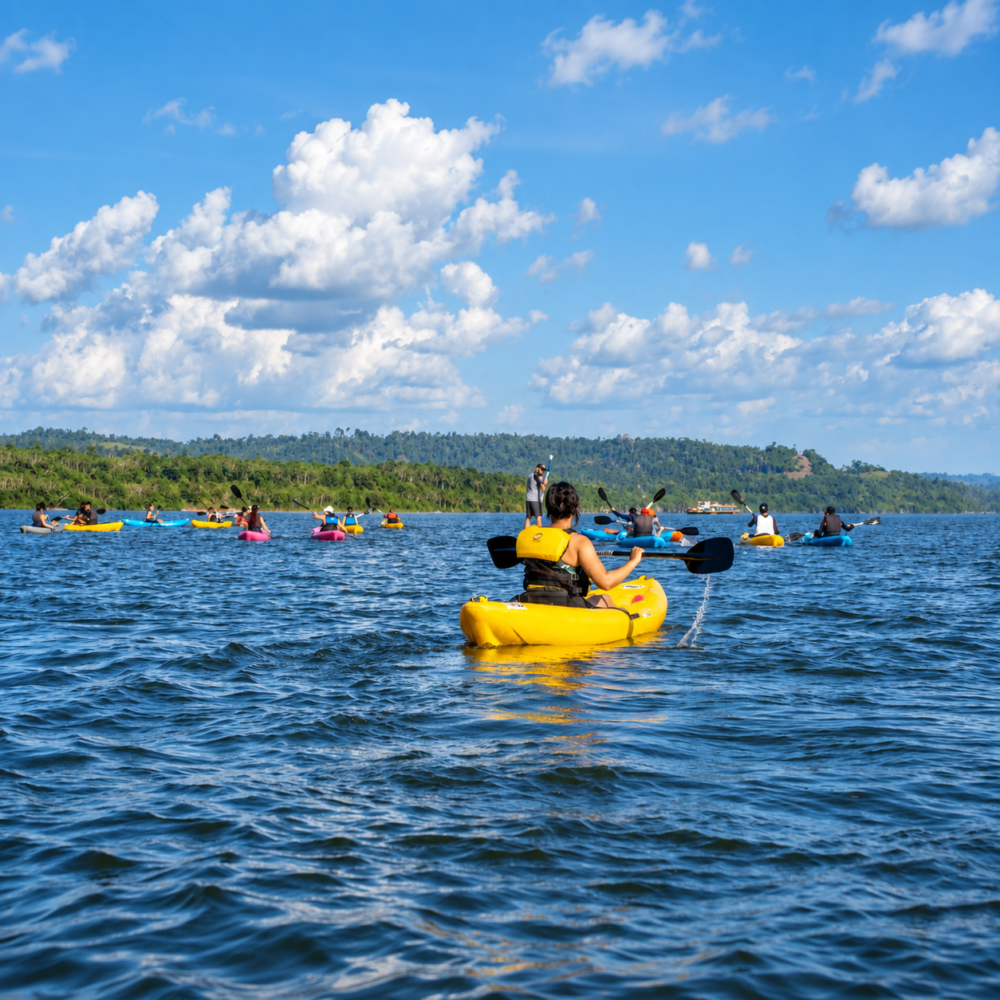
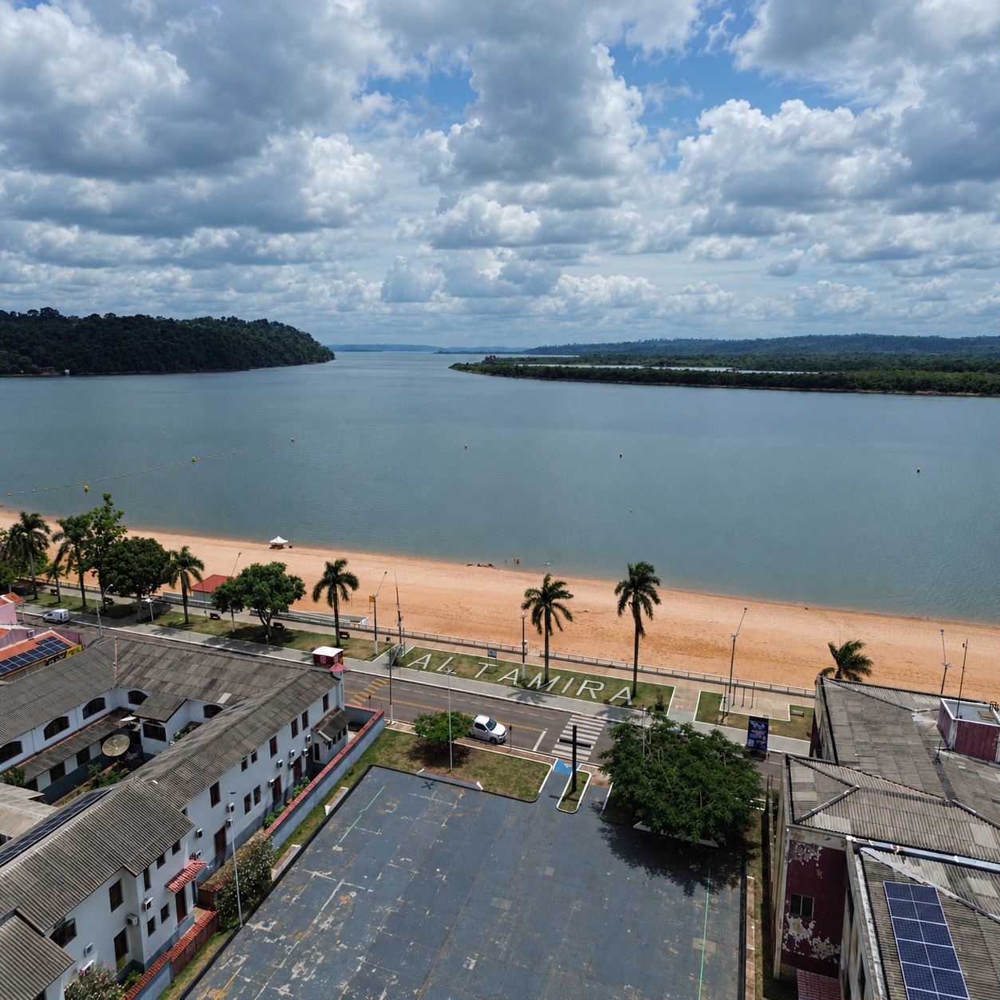
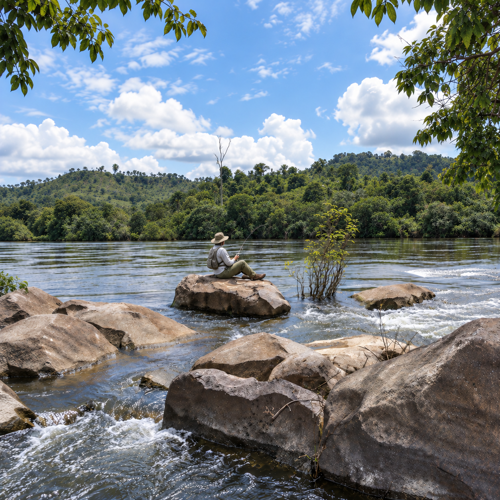
03 — experiências com sentido
Conheça quem vive o território, prove sabores da região e deixe que cada encontro mude um pouco a sua rota.
04 — paisagens que permanecem
Da correnteza à queda d’água, Altamira convida a olhar de perto e caminhar com respeito.
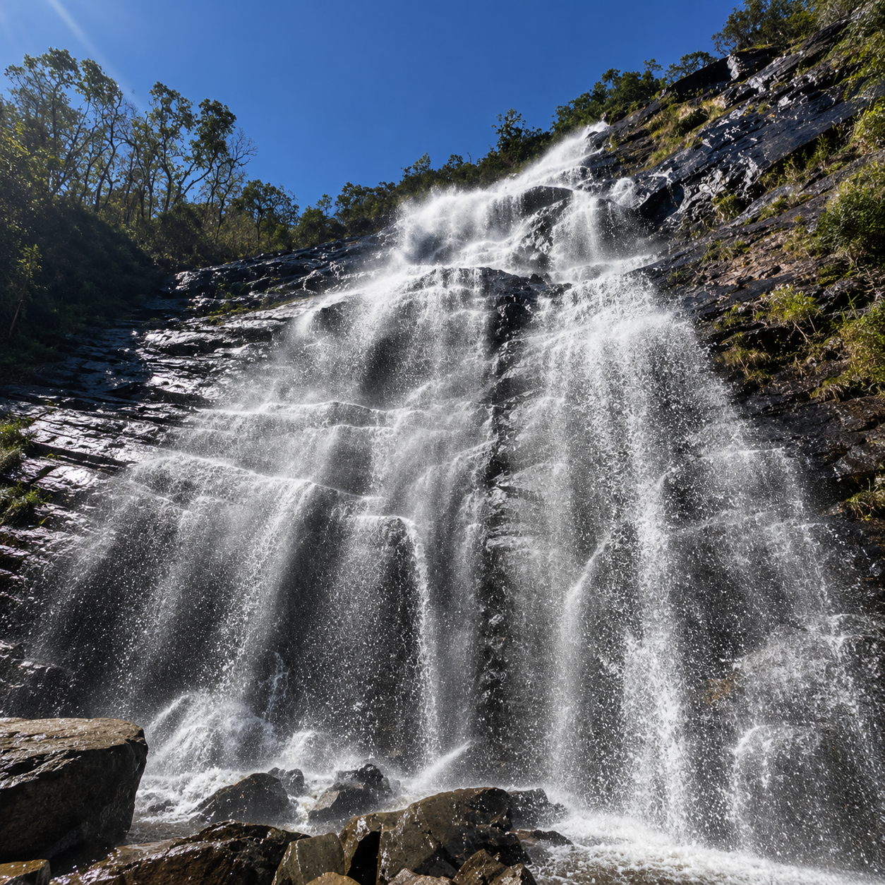
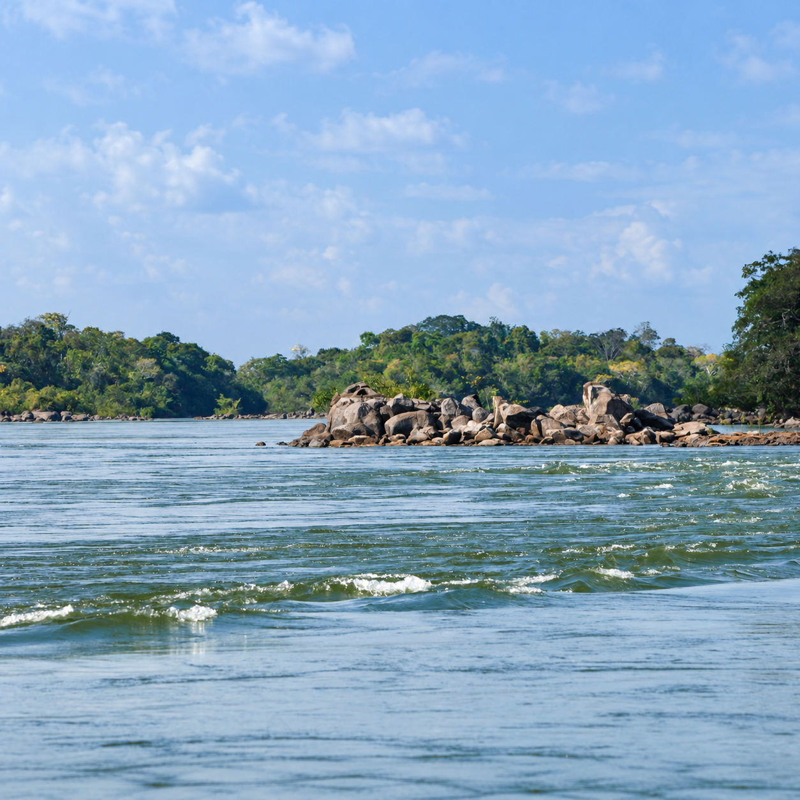
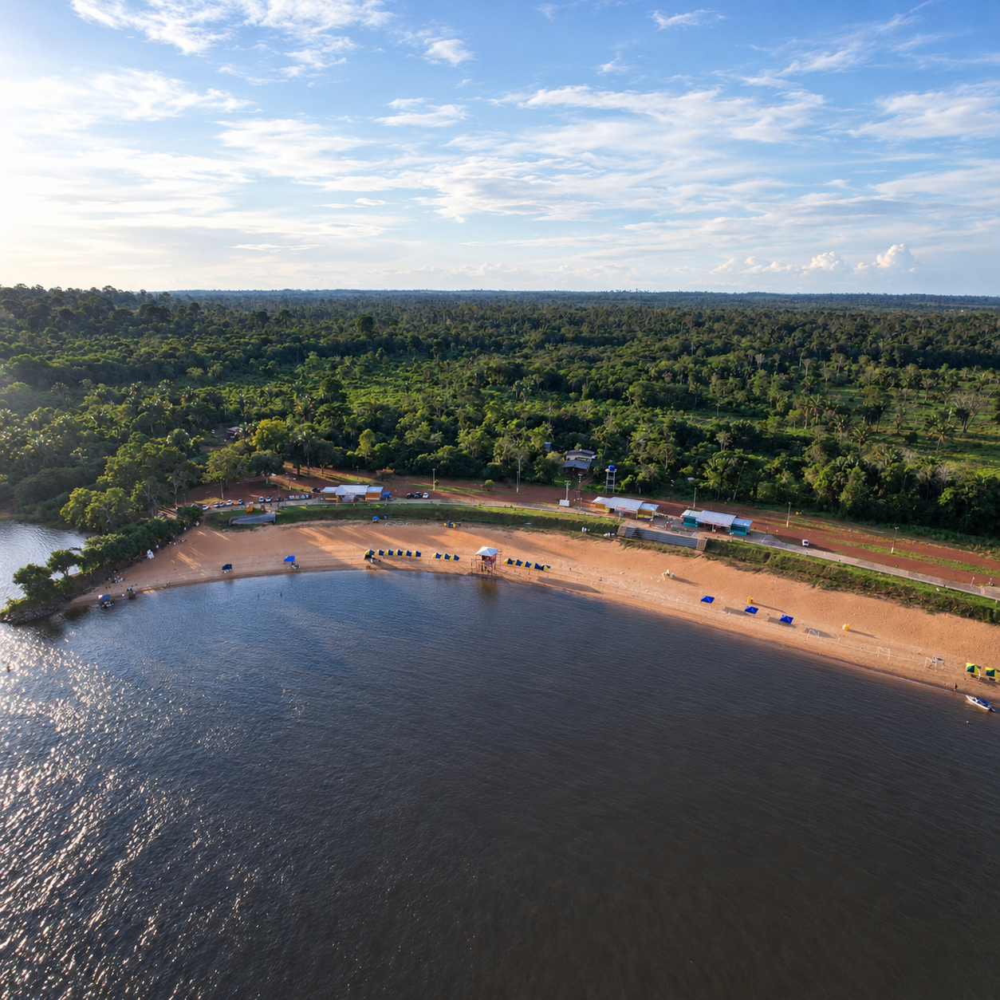
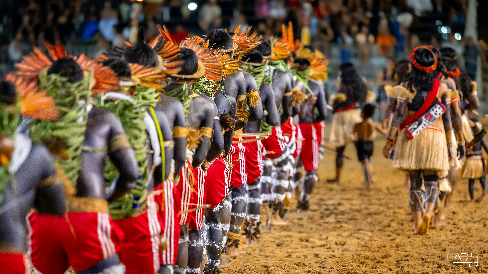
05 — um território de muitas vozes
“Conhecer Altamira também é aprender a chegar.”
A eConexão apresenta cada experiência com contexto, cuidado e valorização de quem mantém os saberes do território.
06 — sabores do Xingu
Ingredientes amazônicos, receitas locais e endereços que contam a cidade pelo paladar.
Adicionar à minha rota ↗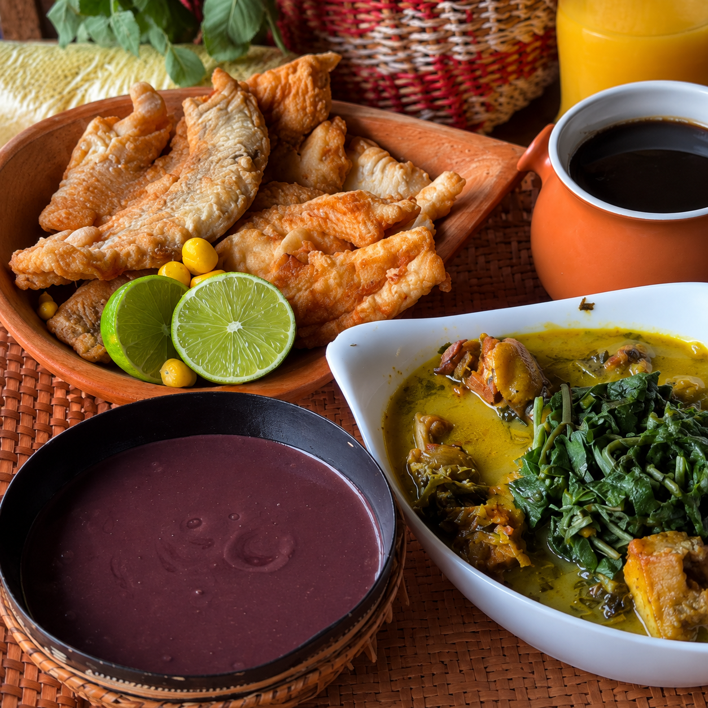
07 — viajar também é cuidar
Organiza o destino em rotas fáceis de descobrir.
Leva visibilidade a experiências e negócios locais.
Valoriza histórias, paisagens e culturas ligadas ao Xingu.
08 — sua próxima história
Escolha uma intenção para começar sua rota.
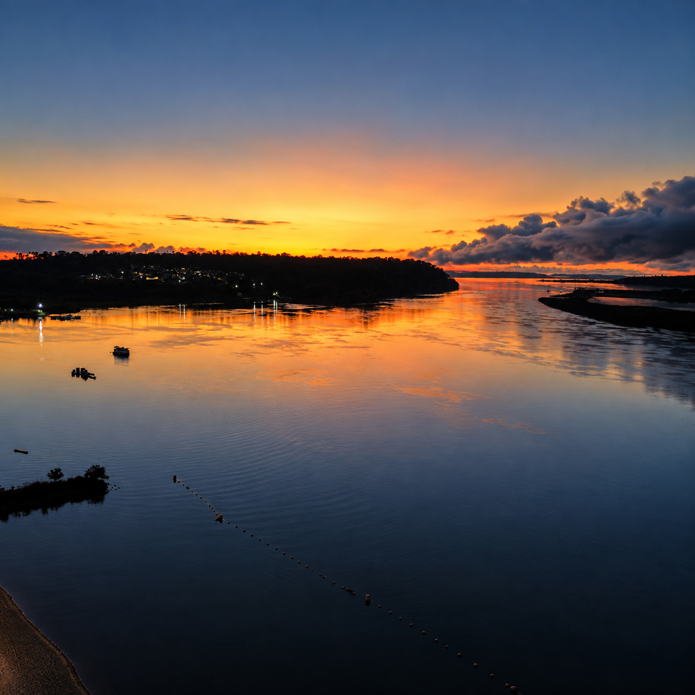